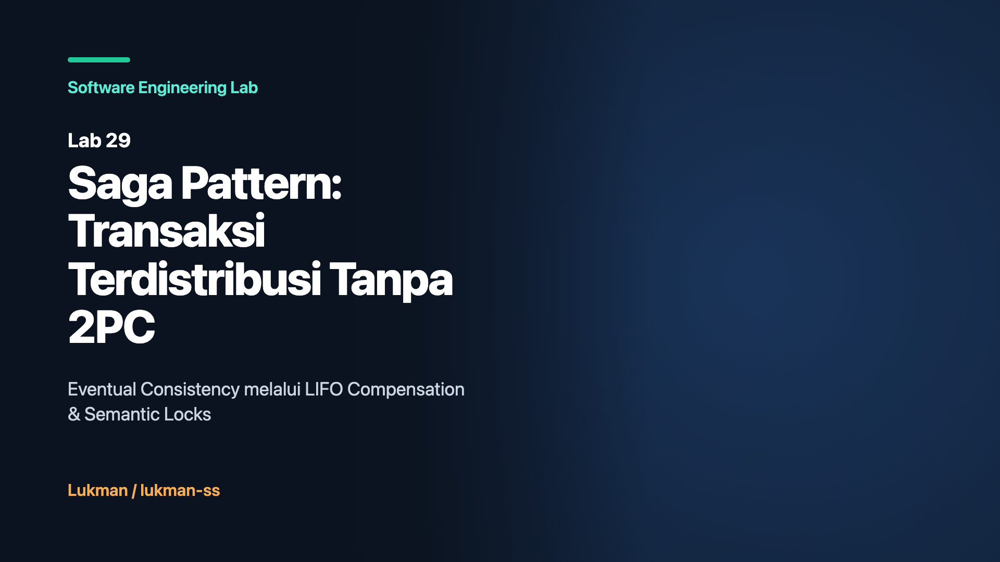

Pola arsitektur monolitik tradisional mengandalkan basis data relasional tunggal dengan dukungan transaksi ACID (Atomicity, Consistency, Isolation, Durability) yang matang. Dalam paradigma ini, sebuah alur transaksi bisnis terpadu—misalnya sistem checkout e-commerce yang melibatkan pembuatan pesanan, pendebitan dana pelanggan, reservasi stok barang di gudang, dan pembaruan kuota pengiriman—dapat dieksekusi di dalam satu blok transaksi database tunggal: BEGIN TRANSACTION, serangkaian mutasi tabel melalui query SQL, lalu ditutup dengan COMMIT. Jika terjadi kegagalan sistem pada salah satu operasi baris data, mesin basis data secara otomatis membatalkan seluruh perubahan dengan instruksi ROLLBACK. Seluruh data kembali ke status awal secara instan dan tanpa meninggalkan jejak mutasi parsial.
Ketika sistem bertransformasi mengadopsi arsitektur microservices, batasan desain mendasar yang diterapkan adalah pola Database-per-Service. Setiap modul layanan mikro memiliki kepemilikan mutlak terhadap penyimpanan datanya sendiri. Service Order memiliki basis datanya sendiri (misalnya PostgreSQL), Service Payment mengelola basis data transaksinya sendiri, dan Service Inventory memelihara inventaris gudang di cluster terpisah. Pola ini sengaja dipilih untuk menjaga otonomi deployment, skalabilitas independen, dan batas domain bisnis (bounded context) yang terisolasi.
Dampak langsung dari penerapan Database-per-Service adalah hilangnya kemampuan transaksi ACID global. Tidak ada lagi satu database engine tunggal yang dapat mengunci baris data di tiga database fisik yang berbeda, mengoordinasikan log commit, dan menjamin isolasi mutlak. Setiap operasi database kini menjadi transaksi lokal yang terisolasi pada masing-masing node layanan. Transaksi checkout yang tadinya berjalan di satu mesin kini terfragmentasi menjadi tiga operasi fisik independen di atas jaringan komputer.
Dalam kondisi ini, arsitektur perangkat lunak dipaksa beralih dari model konsistensi ketat (ACID) menuju model konsistensi bertahap (BASE: Basically Available, Soft state, Eventual consistency). Model BASE mengakui kenyataan fisik sistem terdistribusi:
Motivasi utama dari Lab 29 ini adalah merancang, mengimplementasikan, dan menguji mekanisme koordinasi transaksi terdistribusi berbasis Saga Pattern dalam bahasa Go standar tanpa dependensi pihak ketiga. Melalui implementasi ini, insinyur perangkat lunak dapat memahami cara menjaga keutuhan status bisnis lintas layanan independen tanpa mengorbankan ketersediaan sistem dan tanpa ketergantungan pada protokol penguncian terdistribusi yang rapuh.
Sebelum Saga Pattern populer di dunia microservices, solusi standar industri untuk transaksi terdistribusi adalah protokol Two-Phase Commit (2PC), yang sering diimplementasikan dalam standar XA/Open. Protokol 2PC mencoba mempertahankan karakteristik ACID di beberapa node basis data terdistribusi melalui dua fase koordinasi terstruktur: Fase Voting (Prepare Phase) dan Fase Eksekusi (Commit/Abort Phase).
Protokol 2PC memiliki serangkaian mode kegagalan kritis (failure modes) yang menjadikannya anti-pattern dalam arsitektur berskala tinggi:
VOTE_COMMIT wajib mengunci seluruh sumber daya lokal (row lock, index lock) yang terlibat dan menunggu hingga koordinator terpusat mengirimkan instruksi GLOBAL_COMMIT. Selama menunggu pesan kedua, tidak ada partisipan yang boleh melepaskan lock atau mengambil keputusan sepihak. Jika koordinator lambat atau mengalami gangguan, seluruh baris database di semua layanan terkunci tanpa batas waktu.Masalah-masalah 2PC tersebut diselesaikan oleh Saga Pattern dengan menghilangkan penguncian global secara permanen. Alih-alih menahan lock di tiga database terpisah selama proses transaksi berlangsung, Saga mengeksekusi transaksi lokal secara langsung dan segera melakukan commit pada masing-masing database layanan. Dengan demikian, lock database lokal langsung dilepaskan dalam hitungan milidetik. Sumber daya komputasi dan pool koneksi dibebaskan kembali seketika untuk melayani beban kerja lainnya.
Saga Pattern pertama kali diperkenalkan dalam makalah akademis oleh Hector Garcia-Molina dan Kenneth Salem pada tahun 1987 sebagai solusi untuk Long-Lived Transactions (LLTs). Dalam arsitektur microservices modern, Saga didefinisikan sebagai urutan transaksi lokal (sequence of local transactions) T1, T2, ..., Tn. Setiap transaksi lokal memperbarui status pada satu layanan tunggal dan memicu langkah berikutnya.
Jika salah satu transaksi lokal mengalami kegagalan pada langkah Tk, Saga menjamin konsistensi sistem dengan mengeksekusi rangkaian transaksi kompensasi (compensating transactions) Ck-1, ..., C2, C1 dalam urutan terbalik (Last-In, First-Out / LIFO). Transaksi kompensasi adalah tindakan bisnis eksplisit yang membatalkan dampak efek samping dari transaksi lokal yang telah terlanjur di-commit sebelumnya.
Berdasarkan taksonomi arsitektural yang didokumentasikan dalam Microsoft Azure Architecture Center dan literatur Chris Richardson, langkah-langkah di dalam saga diklasifikasikan ke dalam tiga kategori transaksi:
Saga dapat dikoordinasikan menggunakan dua pola topologi yang berbeda:
InventoryFailed) dan layanan lain mendengarkan event tersebut untuk menjalankan kompensasi masing-masing. Keuntungannya adalah decoupling yang longgar. Kekurangannya adalah sulitnya melacak alur transaksi end-to-end dan risiko dependensi sirkular antar-event.Karena Saga tidak memiliki isolasi ACID global, sistem rentan terhadap anomali data seperti dirty reads dan lost updates. Untuk memitigasi hal ini, Lab 29 mengimplementasikan dua countermeasure arsitektural:
OrderPending) dengan flag penguncian semantik selama transaksi saga berlangsung. Permintaan eksternal lain yang mencoba memodifikasi entitas tersebut akan ditolak atau dipaksa menunggu hingga status saga mencapai status final (OrderApproved atau OrderCancelled).Berikut adalah representasi arsitektur alur koordinasi pada kedua pendekatan:
=== ALUR ORKESTRASI (ORCHESTRATOR-DRIVEN) ===
+-------------------------------+
| Saga Orchestrator |
+---------------+---------------+
|
[1] CreateOrder() | [2] ProcessPayment()
+------------------------+------------------------+
| |
v v
+------------------+ +------------------+
| OrderService | | PaymentService |
| (PENDING/Lock) | | (IDEMP-KEY) |
+------------------+ +------------------+
|
| [3] ReserveInventory()
v
+--------------------+
| InventoryService |
| (Stok Dikurangi) |
+--------------------+
|
[4] Kegagalan Stok: Reserve() -> FAIL
|
[5] LIFO Compensate: RefundPayment() (Index 1)
[6] LIFO Compensate: CancelOrder() (Index 0)
=== ALUR KOREOGRAFI (EVENT-DRIVEN CHOREOGRAPHY) ===
OrderService ---> EventBus: OrderCreated
|
+---> PaymentService (Consume OrderCreated)
|
Execute: ProcessPayment()
|
PaymentService -> EventBus: PaymentCompleted
|
+---> InventoryService (Consume PaymentCompleted)
|
Execute: Reserve() -> GAGAL (Out of Stock)
|
InventoryService -> EventBus: InventoryFailed
|
+---> PaymentService (Consume InventoryFailed)
| |
| Execute: RefundPayment()
|
+---> OrderService (Consume InventoryFailed)
|
Execute: CancelOrder() (Lepas Semantic Lock)
Implementasi Lab 29 dibangun secara mandiri di dalam paket internal/saga dan internal/services menggunakan pustaka standar Go. Struktur kode dirancang untuk memisahkan abstraksi mesin saga dari logika layanan domain.
Orchestrator mengelola daftar langkah transaksi berurutan. Setiap langkah dibungkus ke dalam struct Step yang mendefinisikan nama langkah, closure fungsi Execute, dan closure fungsi Compensate:
package saga
import (
"context"
"fmt"
"sync"
)
type StepStatus string
const (
StatusPending StepStatus = "PENDING"
StatusExecuted StepStatus = "EXECUTED"
StatusFailed StepStatus = "FAILED"
StatusCompensated StepStatus = "COMPENSATED"
StatusCompensateFailed StepStatus = "COMPENSATE_FAILED"
)
type Step struct {
Name string
Execute func(ctx context.Context) error
Compensate func(ctx context.Context) error
}
type StepLog struct {
Name string
Status StepStatus
}
type Orchestrator struct {
mu sync.Mutex
steps []Step
logs []StepLog
}
func NewOrchestrator() *Orchestrator {
return &Orchestrator{
steps: make([]Step, 0),
logs: make([]StepLog, 0),
}
}
func (o *Orchestrator) AddStep(step Step) {
o.mu.Lock()
defer o.mu.Unlock()
o.steps = append(o.steps, step)
}
Eksekusi langkah dilakukan secara berurutan di dalam method Execute. Jika salah satu langkah mengembalikan error atau context mengalami pembatalan (cancellation), orchestrator langsung menghentikan iterasi maju dan memanggil method privat compensate:
func (o *Orchestrator) Execute(ctx context.Context) error {
o.mu.Lock()
steps := make([]Step, len(o.steps))
copy(steps, o.steps)
o.mu.Unlock()
executed := make([]Step, 0)
for _, step := range steps {
select {
case <-ctx.Done():
o.mu.Lock()
o.logs = append(o.logs, StepLog{Name: step.Name, Status: StatusFailed})
o.mu.Unlock()
compErr := o.compensate(context.Background(), executed)
if compErr != nil {
return fmt.Errorf("saga cancelled: %w; compensation errors: %v", ctx.Err(), compErr)
}
return fmt.Errorf("saga cancelled: %w", ctx.Err())
default:
}
err := step.Execute(ctx)
o.mu.Lock()
if err != nil {
o.logs = append(o.logs, StepLog{Name: step.Name, Status: StatusFailed})
o.mu.Unlock()
// LIFO rollback algorithm: kompensasi berjalan terbalik
compErr := o.compensate(context.Background(), executed)
if compErr != nil {
return fmt.Errorf("step %s failed: %w; compensation errors: %v", step.Name, err, compErr)
}
return fmt.Errorf("step %s failed: %w", step.Name, err)
}
o.logs = append(o.logs, StepLog{Name: step.Name, Status: StatusExecuted})
o.mu.Unlock()
executed = append(executed, step)
}
return nil
}
Perhatikan detail krusial pada baris pemanggilan kompensasi: ketika ctx.Done() terdeteksi, pemanggilan o.compensate menggunakan context.Background() baru. Hal ini wajib dilakukan agar eksekusi kompensasi tidak langsung gugur akibat context pemanggil yang sudah expired atau dibatalkan.
Implementasi pembalikan LIFO (Last-In, First-Out) dirancang di dalam method compensate:
func (o *Orchestrator) compensate(ctx context.Context, executed []Step) error {
var compErrors []error
for i := len(executed) - 1; i >= 0; i-- {
step := executed[i]
if step.Compensate != nil {
err := step.Compensate(ctx)
o.mu.Lock()
if err != nil {
o.logs = append(o.logs, StepLog{Name: step.Name, Status: StatusCompensateFailed})
compErrors = append(compErrors, fmt.Errorf("compensation %s: %w", step.Name, err))
} else {
o.logs = append(o.logs, StepLog{Name: step.Name, Status: StatusCompensated})
}
o.mu.Unlock()
}
}
if len(compErrors) > 0 {
return fmt.Errorf("%v", compErrors)
}
return nil
}
Algoritma berjalan mundur dari len(executed)-1 menuju 0. Jika ada kompensasi yang gagal, status dicatat sebagai StatusCompensateFailed dan error dikumpulkan secara agregat tanpa menghentikan kompensasi langkah sebelumnya.
Untuk mendukung gaya koordinasi koreografi, lab menyediakan struktur EventBus thread-safe yang mendukung publikasi dan langganan event domain:
package saga
import (
"context"
"sync"
)
type EventType string
const (
OrderCreated EventType = "OrderCreated"
OrderCancelled EventType = "OrderCancelled"
PaymentCompleted EventType = "PaymentCompleted"
PaymentFailed EventType = "PaymentFailed"
InventoryReserved EventType = "InventoryReserved"
InventoryFailed EventType = "InventoryFailed"
)
type Event struct {
Type EventType
SagaID string
Payload any
}
type EventHandler func(ctx context.Context, e Event)
type EventBus struct {
mu sync.RWMutex
handlers map[EventType][]EventHandler
}
func NewEventBus() *EventBus {
return &EventBus{
handlers: make(map[EventType][]EventHandler),
}
}
func (b *EventBus) Subscribe(t EventType, h EventHandler) {
b.mu.Lock()
defer b.mu.Unlock()
b.handlers[t] = append(b.handlers[t], h)
}
func (b *EventBus) Publish(ctx context.Context, e Event) {
b.mu.RLock()
handlers := append([]EventHandler(nil), b.handlers[e.Type]...)
b.mu.RUnlock()
for _, h := range handlers {
h(ctx, e)
}
}
Layanan domain mengilustrasikan proteksi status data bisnis. OrderService menerapkan semantic lock menggunakan map internal. Saat pesanan dibuat, status awalnya adalah OrderPending dan identifier order dikunci. Upaya mutasi lain terhadap ID yang sama sebelum status menjadi final akan ditolak:
type OrderService struct {
mu sync.Mutex
orders map[string]OrderState
locks map[string]bool // semantic lock
}
func (s *OrderService) CreateOrder(orderID string) error {
s.mu.Lock()
defer s.mu.Unlock()
if s.locks[orderID] {
return errors.New("order is semantically locked by another operation")
}
s.orders[orderID] = OrderPending
s.locks[orderID] = true
return nil
}
func (s *OrderService) ApproveOrder(orderID string) error {
s.mu.Lock()
defer s.mu.Unlock()
if s.orders[orderID] == OrderCancelled {
return errors.New("cannot approve cancelled order")
}
s.orders[orderID] = OrderApproved
delete(s.locks, orderID)
return nil
}
func (s *OrderService) CancelOrder(orderID string) error {
s.mu.Lock()
defer s.mu.Unlock()
s.orders[orderID] = OrderCancelled
delete(s.locks, orderID)
return nil
}
Sementara itu, PaymentService memvalidasi idempotency key untuk memastikan bahwa instruksi pembayaran ganda dengan ID yang sama tidak mengakibatkan pendebitan berulang:
type PaymentService struct {
mu sync.Mutex
payments map[string]float64
processedID map[string]bool // idempotency key
}
func (s *PaymentService) ProcessPayment(paymentID string, amount float64, shouldFail bool) error {
s.mu.Lock()
defer s.mu.Unlock()
if s.processedID[paymentID] {
return nil // Idempotent success: sudah pernah diproses
}
if shouldFail {
return errors.New("insufficient funds")
}
s.payments[paymentID] = amount
s.processedID[paymentID] = true
return nil
}
func (s *PaymentService) RefundPayment(paymentID string) error {
s.mu.Lock()
defer s.mu.Unlock()
delete(s.payments, paymentID)
return nil
}
Kebenaran implementasi diverifikasi melalui demonstrasi skenario end-to-end pada cmd/demo/main.go serta 9 unit dan integration test pada tests/saga_test.go.
Berikut adalah hasil tangkapan output aktual saat menjalankan perintah go run cmd/demo/main.go:
=== Saga Pattern Demonstration ===
--- Scenario 1: Happy Path (Orchestrator) ---
-> [OrderService] Creating order: ord-success
-> [PaymentService] Processing payment for: ord-success
-> [InventoryService] Reserving 1 laptop
-> [OrderService] Finalizing order approval
Scenario 1 Result: error=<nil>, OrderState=APPROVED, Remaining Stock=0
--- Scenario 2: Rollback on Failure (Orchestrator) ---
-> [OrderService] Creating order: ord-failed
-> [PaymentService] Processing payment for: ord-failed
-> [InventoryService] Reserving 1 laptop (current stock: 0 )
<- [PaymentService] Compensating: Refunding payment for: ord-failed
<- [OrderService] Compensating: Cancelling order: ord-failed
Scenario 2 Result: error=step ReserveInventory failed: out of stock, OrderState=CANCELLED, HasPayment=false, Stock=0
=== Demo Completed Successfully ===
Pada Skenario 1 (Happy Path), setiap transaksi lokal berhasil diselesaikan dan status order bertransisi menjadi APPROVED dengan sisa stok laptop berkurang menjadi 0. Pada Skenario 2 (Rollback on Failure), langkah ReserveInventory gagal karena stok habis (stock: 0). Orchestrator langsung mengeksekusi kompensasi LIFO: merefund pembayaran pada PaymentService terlebih dahulu, lalu membatalkan order pada OrderService. Kondisi akhir mencerminkan konsistensi penuh: OrderState=CANCELLED, HasPayment=false, dan inventaris tetap utuh pada nilai 0.
Seluruh suite pengujian diuji menggunakan perintah go test -v -race ./... untuk memastikan integritas logika dan ketiadaan kondisi perlombaan memori (data race). Berikut adalah output aktual pengujian:
=== RUN TestOrchestrator_HappyPath
--- PASS: TestOrchestrator_HappyPath (0.00s)
=== RUN TestOrchestrator_FailureCompensatesLIFO
--- PASS: TestOrchestrator_FailureCompensatesLIFO (0.00s)
=== RUN TestPayment_Idempotency
--- PASS: TestPayment_Idempotency (0.00s)
=== RUN TestSemanticLock
--- PASS: TestSemanticLock (0.00s)
=== RUN TestOrchestrator_Concurrency
--- PASS: TestOrchestrator_Concurrency (0.00s)
=== RUN TestChoreography_Flow
--- PASS: TestChoreography_Flow (0.00s)
=== RUN TestChoreography_FailureCompensates
--- PASS: TestChoreography_FailureCompensates (0.00s)
=== RUN TestOrchestrator_CompensationErrorPropagated
--- PASS: TestOrchestrator_CompensationErrorPropagated (0.00s)
=== RUN TestOrchestrator_ContextCancellation
--- PASS: TestOrchestrator_ContextCancellation (0.00s)
PASS
ok labs/29-saga-pattern/tests 1.450s
Rincian pengujian yang berhasil dieksekusi mencakup sembilan skenario mendasar:
TestOrchestrator_HappyPath: Memverifikasi eksekusi 4 langkah berurutan hingga order berstatus APPROVED.TestOrchestrator_FailureCompensatesLIFO: Menguji urutan log status [EXECUTED, EXECUTED, FAILED, COMPENSATED, COMPENSATED] secara presisi.TestPayment_Idempotency: Memastikan pemanggilan kedua dengan ID pembayaran yang sama berhasil tanpa menimbulkan efek samping ganda.TestSemanticLock: Memastikan pesanan yang sedang terkunci semantik menolak inisialisasi ulang.TestOrchestrator_Concurrency: Menjalankan 10 pekerja konkuren secara simultan untuk memvalidasi pengurangan stok inventaris yang aman dari kondisi race.TestChoreography_Flow: Menguji transmisi event asinkron berbasis EventBus dari OrderCreated hingga OrderApproved.TestChoreography_FailureCompensates: Menguji publikasi event InventoryFailed yang memicu kompensasi refund dan pembatalan order.TestOrchestrator_CompensationErrorPropagated: Memastikan kesalahan pada proses kompensasi dicatat ke log sebagai COMPENSATE_FAILED dan diteruskan ke pemanggil.TestOrchestrator_ContextCancellation: Memastikan bahwa jika context dibatalkan di tengah jalan, langkah berikutnya tidak dieksekusi dan langkah yang telah selesai langsung dikompensasi.Untuk memahami posisi Saga Pattern di dalam lanskap arsitektur sistem pengolahan data, tabel perbandingan komprehensif berikut menganalisis karakteristik teknis antara ACID Monolitik, Two-Phase Commit (2PC), dan Saga Pattern:
| Dimensi Evaluasi | ACID Monolitik | Two-Phase Commit (2PC) | Saga Pattern |
|---|---|---|---|
| Model Konsistensi | Konsistensi Keras (Immediate Consistency). Data selalu valid di setiap titik waktu. | Konsistensi Keras (Immediate Consistency) lintas database. | Konsistensi Bertahap (Eventual Consistency / BASE). Terdapat jendela inkonsistensi sementara. |
| Isolasi Transaksi | Penuh (Serializability / Read Committed). Tidak ada dirty reads pada konfigurasi standar. | Penuh. Sumber daya terkunci secara global hingga keputusan commit final tercapai. | Tidak Ada Isolasi ACID. Pembaruan lokal langsung terlihat oleh transaksi lain sebelum saga selesai. |
| Mekanisme Pembatalan | Rollback otomatis tingkat basis data (mengembalikan image data dari WAL / Undo Log). | Global Abort yang dipicu oleh koordinator; partisi lokal melepaskan lock dan membuang draft data. | Transaksi Kompensasi Semantik (LIFO). Menjalankan mutasi kebalikan secara eksplisit di tingkat bisnis. |
| Ketersediaan Sistem (Availability) | Tinggi untuk lingkup lokal node tunggal, namun rapuh jika database tunggal tersebut down. | Sangat Rendah. Jika satu partisipan atau koordinator tidak responsif, seluruh transaksi diblokir. | Sangat Tinggi. Partisipan hanya menjalankan transaksi lokal cepat; sistem toleran terhadap keterlambatan parsial. |
| Durasi Penahanan Lock | Milidetik (hanya selama query SQL di dalam blok transaksi lokal dieksekusi). | Panjang (menahan lock di semua node database sepanjang beberapa putaran round-trip jaringan). | Sangat Singkat. Lock hanya ditahan selama eksekusi transaksi lokal per layanan individu. |
| Skalabilitas Horizontal | Terbatas pada kemampuan penskalaan vertikal atau replikasi read-replica database tunggal. | Sangat Buruk. Kompleksitas koordinasi jaringan meningkat seiring bertambahnya jumlah node partisipan. | Sangat Baik. Setiap layanan mikro dapat diskalakan secara independen tanpa batas locking lintas database. |
| Kompleksitas Implementasi | Sangat Sederhana. Ditangani sepenuhnya oleh database engine dan framework ORM standar. | Tinggi pada lapisan infrastruktur (memerlukan manajer transaksi XA yang kompatibel). | Tinggi pada lapisan kode aplikasi. Pengembang wajib menulis logika kompensasi dan penanganan kegagalan. |
Analisis trade-off di atas menegaskan bahwa Saga Pattern menukar garansi isolasi data seketika demi mendapatkan ketersediaan tinggi, skalabilitas horizontal bebas hambatan, dan throughput transaksi yang optimal pada arsitektur microservices.
Pengadopsian Saga Pattern menuntut pemahaman mendalam atas risiko dan kompromi arsitektural yang menyertainya:
Ketiadaan isolasi ACID global merupakan harga termahal dari Saga Pattern. Begitu langkah lokal pertama berhasil di-commit, mutasi data tersebut langsung terbaca oleh pengguna lain atau saga lain yang sedang berjalan secara konkuren. Kondisi ini membuka peluang terjadinya tiga anomali data klasik:
Penanggulangan anomali ini mengharuskan arsitek menerapkan teknik kompensasi semantik tingkat lanjut, seperti penggunaan Semantic Lock (status PENDING), Commutative Updates (operasi matematis yang urutan eksekusinya tidak mempengaruhi hasil akhir, seperti mutasi debit/kredit saldo), dan Pessimistic View (menyembunyikan status pesanan dari query publik sampai saga mencapai status APPROVED).
Dalam kondisi ideal, transaksi kompensasi diasumsikan selalu berhasil dijalankan. Namun dalam lingkungan produksi nyata, transaksi kompensasi itu sendiri dapat mengalami kegagalan. Penyebabnya beragam: kehabisan dana pada rekening penampung refund, sistem bank eksternal sedang mengalami pemadaman (downtime), atau anomali jaringan.
Pada baris kode 100 orchestrator.go, implementasi Lab 29 menandai status ini dengan status eksplisit StatusCompensateFailed. Ketika sebuah kompensasi gagal dieksekusi, sistem berada dalam kondisi inkonsistensi yang berbahaya. Penanganan skenario ini membutuhkan strategi mitigasi operasional tingkat lanjut:
Implementasi Lab 29 dirancang sebagai referensi arsitektur yang bersih, ringkas, dan fokus pada pemahaman konsep inti. Oleh karena itu, terdapat batasan desain yang disengaja:
map[string]...) dengan proteksi sync.Mutex. Jika proses aplikasi berhenti atau mengalami crash mendadak di tengah eksekusi saga, seluruh status transaksi in-flight dan log eksekusi akan hilang.Memilih pola koordinasi transaksi terdistribusi yang tepat bergantung pada skala sistem, topologi jaringan, dan kompleksitas alur bisnis:
Artikel dan implementasi laboratorium ini merujuk pada standar arsitektur terdistribusi internasional dan repositori kode terbuka:
9c525944dc2de00e16513830a25ffa1c4834d742.